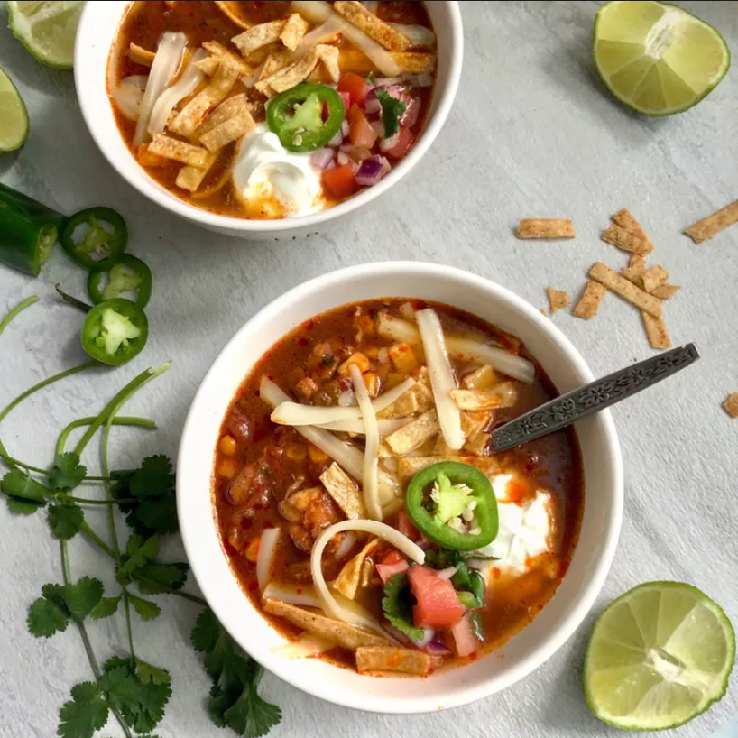

Chicken Enchilada Soup

Description
Chicken enchilada soup is a perfect recipe to make if you're craving a cozy meal. This soup is rich with flavor gained from the enchilada sauce and a whole array of different peppers and spices.
It can be made with chicken breasts, thighs, or even leftovers. And you can also experiment with your own spices to make it less or more potent.
Ingredients
- 1 Tbsp cooking oil, divided
- 1 yellow onion, diced
- 1 jalapeño, seeded & diced
- 2 cloves garlic, minced
- 2 Tbsp all-purpose flour
- 2 Tbsp chili powder
- 1/2 tsp ground cumin
- 1/2 tsp garlic powder
- 1/4 tsp cayenne pepper
- 3/4 tsp salt
- 3 oz. tomato paste
- 1 (15 oz.) can black beans, drained
- 1 (15 oz.) can fire roasted diced tomatoes
- 1 (10 oz.) can diced tomatoes with green chiles
- 1 cup frozen corn
- 4 cups chicken broth
- 2 boneless, skinless chicken breasts (about 1.5 lb. total)
Steps
- Add 1 Tbsp of cooking oil along with the diced onion, finely diced jalapeño and minced garlic cloves to a large dutch oven or soup pot over medium heat. Sauté for 2-3 minutes or until onions are soft and translucent.
- Next add the all-purpose flour, chili powder, ground cumin, garlic powder, cayenne pepper, salt, and the remaining 2 Tbsp of cooking oil to the pot. Stir well and cook the flour and spices with the vegetables for 2 minutes.
- Add the tomato paste, drained black beans, fire roasted tomatoes, diced tomatoes with green chiles, frozen corn, and chicken broth to the pot. Stir all the ingredients together making sure to dissolve the tomato paste and scrape up any spices that may be stuck at the bottom of the pot.
- Now add the chicken breasts to the pot. Place a lid on the pot and bring the soup up to a boil. Once boiling, reduce the heat to medium-low and allow the soup to simmer for 45 minutes. Make sure the soup is just at a steady simmer at this point, as this will help to create tender chicken breast meat.
- After the soup has simmered for 45 minutes, remove the chicken breasts and place them on a clean cutting board. Once cool enough to touch, shred the chicken breasts with a fork.
- Add the shredded chicken meat back to the soup pot and stir until the chicken is evenly distributed throughout the soup.
- Serve this soup with your favorite toppings like shredded cheese, cilantro, sliced avocado, a dollop of sour cream, or even some more sliced jalapeño. Enjoy!
Sources